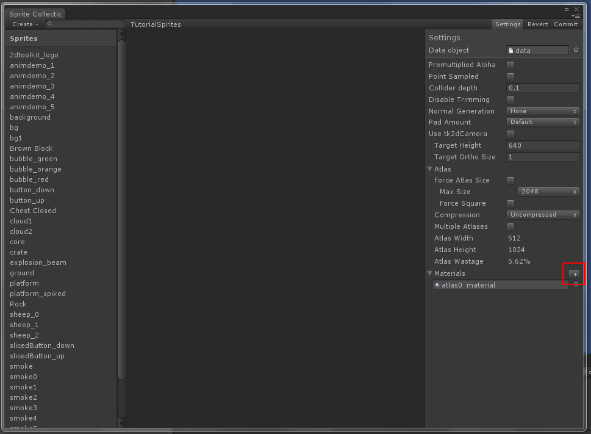
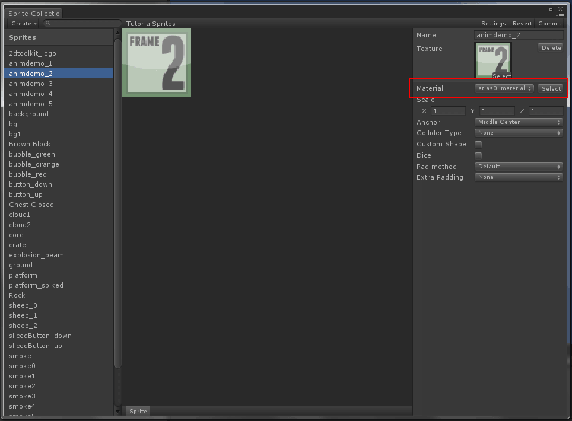

Documentation
Script Reference
Forum
Documentation
Script Reference
Forum
In some cases, it may be beneficial to merge multiple sprites into one atlas, but maintaining different materials on these sprites. One example of this is when importing tilesets for a tile map - a majority of them may be solid and there could be significant GPU gains to be had by simply assigning a solid shader to these sprites.
Open the sprite collection editor.
Click on "Settings" to bring up the settings overlay.
Click on "+" next to the materials list as shown below. This will duplicate the material and save a copy in the same directory. You can then click on this material and change the shader on it, etc. You can create as many duplicates as you like.

To delete a copied material, click on the material in the settings overlay once, and press backspace/delete on the keyboard.
Now when editing sprites, you should see a "Material" dropdown in the inspector. You can change materials on one or more sprites this way.

Clicking on the "Select" button next to the material drop-down will multi-select all sprites using this material.